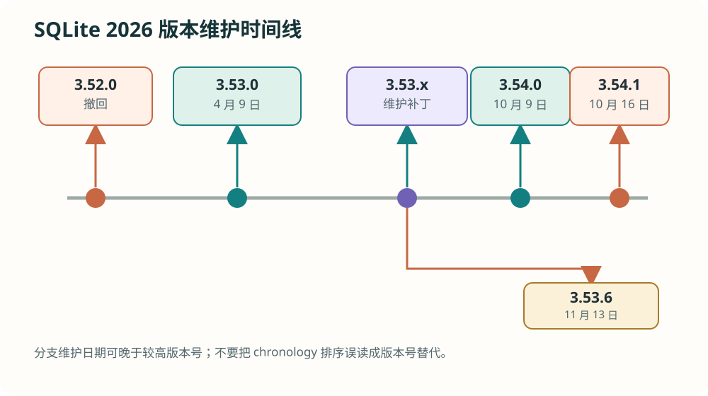
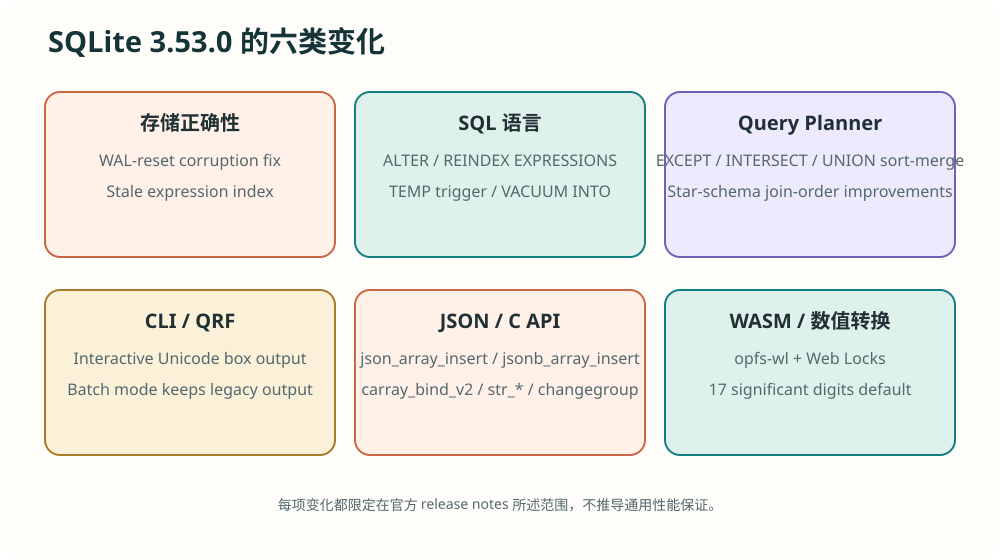
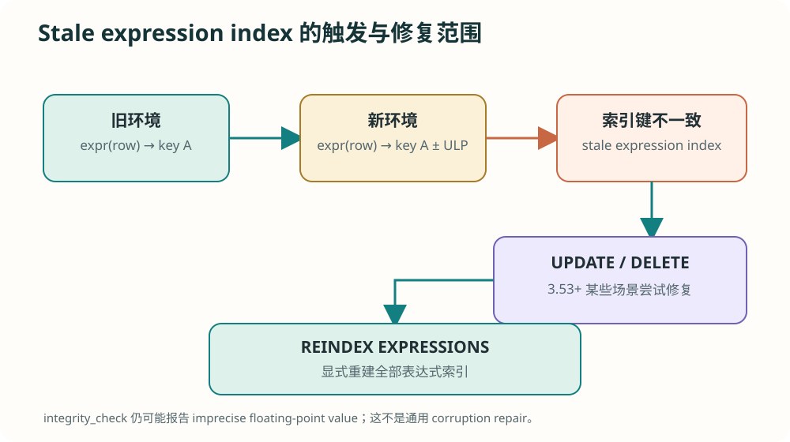
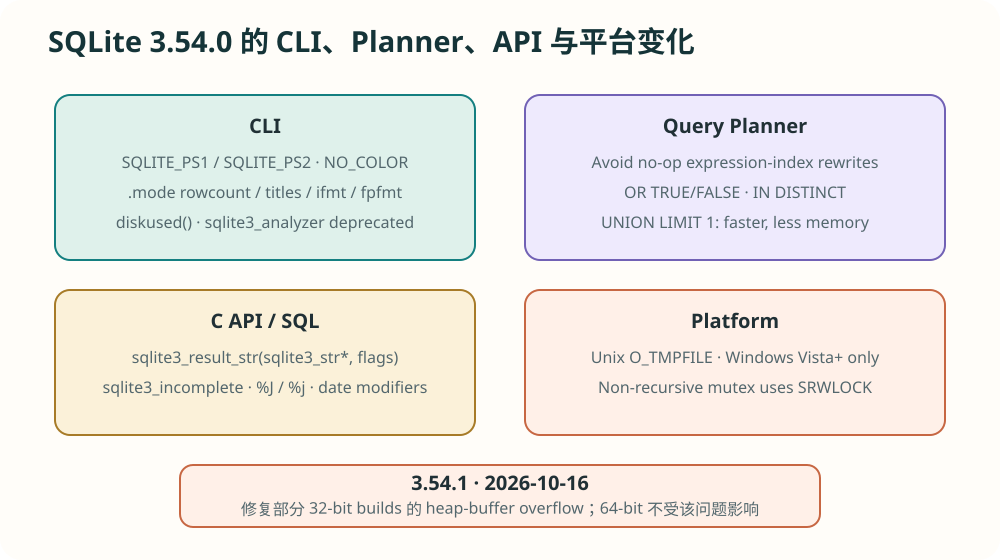

SQLite 3.53–3.54：版本演进与源码变更
读懂一个数据库版本，不是把发布说明里的关键词改写成故事，而是把“发生了什么、为什么发生、影响哪个接口、落在哪个源文件、有哪些兼容风险”逐一对应起来。
阅读提示：可轻点图解打开独立矢量原图；窄屏图解支持横向查看细节。
1. 先读版本时间线：3.52 撤回不是一个可以略过的脚注
2026 年 3 月 6 日发布的 SQLite 3.52.0 随后被撤回。官方说明指出，某些新特性在表达式索引或由文本 / JSONB 输入产生浮点数的虚拟生成列上，可能与旧版本发生少见的互操作问题。3.53.0 于 4 月 9 日重新发布，携带处理 stale expression index 的增强，并修复 WAL-reset 数据库损坏问题。
之后 3.53.1、3.53.2、3.53.3、3.53.4 等维护版本陆续修复问题；官方 chronology 在 2026-11-13 还列出 3.53.6。另一条版本线是 3.54.0（10 月 9 日）和 3.54.1（10 月 16 日）。3.54.1 修复了 3.54.0 在部分 32 位构建中可能触发的 heap-buffer overflow。核查日的正式 chronology 中，版本号最高的已发布版本仍是 3.54.1；3.53.6 是更晚日期发布的旧分支维护补丁，而 draft chronology 将 3.55.0 标为 pending，不能把它当作已发布版本。

2. 3.53.0：数据库正确性、SQL 语义与 CLI 一起变化
3.53.0 的第一项重要修复是 WAL-reset 数据库损坏 bug。它不是普通查询优化，而是存储正确性问题；官方说明建议受影响版本升级。源码读者应把 WAL reset、checkpoint 和读者快照放回第 16 章的状态模型中理解，而不是把修复简化为“WAL 变快了”。
第二个可见变化是 Query Result Formatter（QRF）。它用于把 SQL 查询结果排版成适合等宽终端阅读的表格，CLI 交互会话使用 QRF 改善表格展示；批处理会话仍保留旧格式以保持兼容。QRF 是结果格式化层，不是新的 SQL 执行引擎，也不是 SQL 函数集合。
3.53.0 同时增加了若干 SQL 语言能力：ALTER TABLE 可添加和移除 NOT NULL 与 CHECK 约束；REINDEX EXPRESSIONS 只重建表达式索引；TEMP trigger 的主体可访问 main schema 中的表；VACUUM INTO 的 URI 目标支持 reserve=N。新增 JSON 函数包括 json_array_insert() 与 jsonb_array_insert()。
3.53.0 还包含一组明确列出的 Planner 改进：对 EXCEPT、INTERSECT 和 UNION 始终使用 sort-and-merge 算法（发布说明指出它通常快于 hash table）；改善大型星型 schema 多表连接的 join-order 选择；放宽 EXISTS-to-JOIN 插入项必须位于最内层循环的限制；扩展 omit-noop-join 以消除不影响输出的连接链；在 GROUP BY e1 ORDER BY e2 且表达式仅排序方向不同的情况下复用单一索引；并允许虚拟表在结果集与 ORDER BY 不完全相同时优化 DISTINCT。这些是具体 Planner 路径的变化，不等于所有 SQL 查询都会更快。
3.53.0 的 CLI 变化不只是“显示更好看”：QRF 的 Unicode box 输出用于交互会话，批处理继续使用 legacy 格式以兼容脚本；.mode 有大幅增强；.testcase 与 .check 修复后也被用于上游测试脚本；命令行参数可直接读取非空的 .sql / .txt 文件；新增 .timer once 和 .progress --timeout S，并调整 .indexes 的 PATTERN 匹配语义。点命令行末尾的 bare unquoted semicolon 也会被静默忽略，这是一项可能影响旧脚本的兼容性变化。
3.53.0 的 C 接口变化包括 sqlite3_str_truncate()、sqlite3_str_free()、sqlite3_carray_bind_v2()、SQLITE_PREPARE_FROM_DDL、SQLITE_UTF8_ZT、SQLITE_LIMIT_PARSER_DEPTH 和 SQLITE_DBCONFIG_FP_DIGITS。Session Extension 还增加了逐列值写入 changegroup 的增量 API：sqlite3changegroup_change_begin()、change_blob()、change_double()、change_int64()、change_null()、change_text()、sqlite3changegroup_change_finish() 与 sqlite3changegroup_config()。同一版本还改进浮点文本转换，并在 JavaScript/WASM 中加入 opfs-wl VFS。

3. Stale expression index：自修复有明确触发条件
表达式索引把表达式的计算结果存为索引键。即使某个函数被标记为 deterministic，若它的结果在 CPU 架构、操作系统、C 数学库或 SQLite 版本之间出现极小变化，旧索引键也可能与当前重新计算的值不同。官方记录的常见案例是浮点值偏离一两个 ULP；例如从 JSON 文本提取数值后建立表达式索引，升级文本到浮点转换实现后，重新计算结果可能发生微小变化。
SQLite 3.53.0 起，在更新或删除关联行时，遇到 stale expression index 的某些情形会尝试修复索引，而不是像旧版本那样直接报错。这里的“自修复”不是后台扫描器，不代表数据库任意损坏都能自动恢复。PRAGMA integrity_check 仍可能报告类似 index stores an imprecise floating-point value 的信息。
显式的 REINDEX EXPRESSIONS 则重建所有表达式索引，而不触碰普通索引。若应用希望完全避免表达式结果跨版本漂移，可评估 STORED generated column：先把表达式值写入表，再对该列建立普通索引。相关机制、边界与实验已在第 22 章深入展开，本章只把它放回版本演进的因果链。

4. 17 位有效数字：改变的是文本转换策略，不是 IEEE 754 存储精度
3.53.0 改进了浮点数与文本之间的转换。默认舍入从旧版本的 15 位有效数字调整为 17 位；SQLITE_DBCONFIG_FP_DIGITS 可改变该行为。双精度浮点数的二进制表示没有因此增加位数，也没有把 REAL 从 binary64 改成更高精度类型。
17 位的意义在于：对 binary64 值采用足够长的十进制表示，可以支持更可靠的往返转换。它影响的是字符串表示和再次解析后的数值一致性；它不意味着所有输出都必须固定显示 17 个字符，也不意味着数学运算误差消失。
这项变化与 stale expression index 的问题有关：若索引表达式涉及文本到浮点转换，微小的数值转换差异可能改变索引键。应把“数值格式化”“数值解析”“表达式索引一致性”区分为三个问题，不要把它们统称为“浮点精度升级”。
5. 3.54.0：CLI、Planner、平台接口与 C API 的具体改动
3.54.0 的 CLI 更新包括：提示符可通过 SQLITE_PS1 / SQLITE_PS2 环境变量配置；列式输出在空结果时默认仍显示列名；.mode 增加 --rowcount on、--titles always、--ifmt 和 --fpfmt；默认提示符尊重 NO_COLOR。新的 diskused() 扩展被 CLI 的 .diskused 使用，独立 sqlite3_analyzer 工具被标记为 deprecated。为兼容旧脚本，-csv 会自动关闭显示限制；单独一行的 go 或 / 终止 SQL 的旧行为默认停止，只有使用 SQLITE_SHELL_LEGACY_COMMAND_TERMINATOR 构建时才保留。
Planner 改动包括：UPDATE 时若表达式索引键值未改变，就不必改写该索引；改善 expr OR TRUE / expr OR FALSE 优化；忽略 IN 右侧 SELECT 中无意义的 DISTINCT；对 UNION ... LIMIT 1 使用更省内存、更快的处理方式。ALTER TABLE 对添加、删除或重命名为 ROWID、_ROWID_、OID 的列名会报错，以避免特殊 rowid 名称冲突。
3.54.0 还新增 sqlite3_result_str() 和 sqlite3_incomplete()。特别注意，sqlite3_result_str() 并不是“接收一个普通 C 字符串和长度”的函数；它接收的是 sqlite3_str* 动态字符串对象以及所有权处理标志：
sqlite3_str *out = sqlite3_str_new(db);
sqlite3_str_appendf(out, "row=%d", rowNumber);
/* SQLITE_FINISH：把字符串内容交给 SQL 函数结果，
** 同时释放 sqlite3_str 对象。 */
sqlite3_result_str(ctx, out, SQLITE_FINISH);3.54.0 还增加 %J / %j 格式化转换、日期时间函数的 weekday -N 和 end of 修饰符，以及 SQLITE_LIMIT_SCHEMA、SQLITE_LIMIT_TRIGGER_STEPS 两个 limit 项。在 Unix 平台，O_TMPFILE 用于支持该特性的系统创建匿名临时文件；不支持的系统仍走其他临时文件路径。Windows XP、Windows CE 及更早版本不再支持，最低要求为 Windows Vista；非递归 mutex 改用独占 SRWLOCK，递归 mutex 仍需要递归语义，不能把这一改动描述成“SQLite 所有读操作现在共享读锁”。3.54.0 的性能说明约为 speedtest1 在 Linux x64 / Valgrind 计数环境下 CPU cycles 减少约 4%，与 3.51.0 相比约 7.5%；这不是任意 workload 的延迟承诺。

6. 对旧版本介绍做事实审计：把“听起来合理”与“源码证据”分开
| 旧说法 | 核查结果 | 修正后的事实 |
|---|---|---|
| 3.53.0 增加星型 schema join-order 优化和 EXCEPT / INTERSECT / UNION sort-and-merge | 官方发布说明明确列出 | 按其适用查询形态描述；不扩大成通用查询加速保证 |
sqlite3_result_str(ctx, char*, len, destructor) | 签名错误 | 实际接口是 sqlite3_result_str(sqlite3_context*, sqlite3_str*, int) |
| SRWLOCK 让 SQLite 读操作共享锁 | 把 Windows 原语的能力误写成 SQLite 的锁策略 | 3.54.0 的非递归 mutex 使用独占 SRWLOCK；递归 mutex 仍使用 CRITICAL_SECTION |
| 17 位意味着 SQLite REAL 的存储精度提升 | 概念混淆 | 变化在浮点数与文本转换默认有效数字，不改变 binary64 存储格式 |
| 3.54.1 只是普通维护补丁 | 遗漏重要安全修复 | 它修复了 3.54.0 某些 32 位构建中的 heap-buffer overflow |
这种审计不是说某个源文件里搜不到关键词就能证明功能不存在；正确做法是先看 release note，再定位对应 check-in / 源码差异。若证据不足，明确标记“未核实”，而不是用推测补齐故事。
自测：17 位有效数字会让所有浮点运算更准确吗？
不会。它改变浮点值转换成文本时的默认有效数字策略，帮助往返表示；它不改变 binary64 的运算精度，也不能消除浮点运算本身的舍入误差。
7. 版本化源码阅读法：从发布条目走到实现与测试
对 SQLite 3.54.1，可从这些源文件开始核查：src/where.c（Planner）、src/printf.c（格式化实现）、src/sqlite.h.in（公开 API 声明）、src/os_unix.c（Unix 临时文件）、src/mutex_w32.c（Windows mutex）、src/alter.c（ALTER TABLE）、src/select.c（复合 SELECT）、ext/qrf/qrf.h（QRF 接口）。
不要把内部函数名当成公开 ABI，也不要把某个 release 的源文件行号写成永久定位。每次复核都记录 tag、source ID、文件路径、符号名和验证方式。公开接口的签名以对应版本的 sqlite3.h 为准；CLI 的实现不等同于 SQLite 核心库。
sqlite3 :memory: "SELECT sqlite_version(), sqlite_source_id();"
sqlite3 :memory: "PRAGMA compile_options;"
python examples/27_release_probe.py官方资料与版本边界
- SQLite Release History：3.53.0 与 3.54.0 的完整变更条目。
- SQLite Release Chronology：3.53.6、3.54.1 等维护分支日期。
- SQLite News：3.52.0 撤回与 3.53.0 重发的背景。
- Stale Expression Indexes：跨平台浮点差异、自修复范围和 REINDEX EXPRESSIONS。
- sqlite3_result_str()：真实 C API 签名与字符串所有权标志。
- sqlite3_db_config()：包括 SQLITE_DBCONFIG_FP_DIGITS。
- SQLite 3.54.1 source tree：版本固定的源码目录。
- mutex_w32.c 与 os_unix.c：SRWLOCK 与 O_TMPFILE 实现位置。